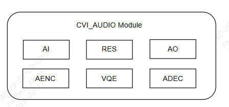
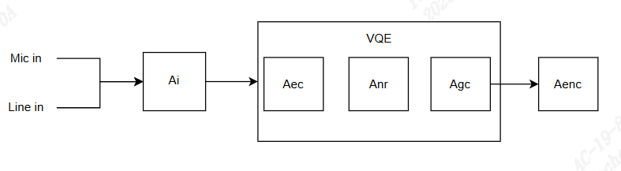
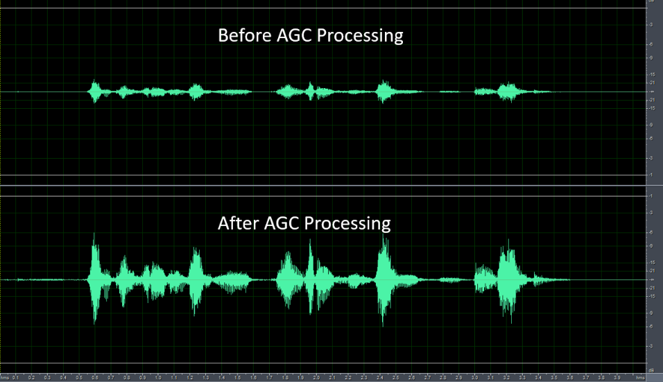

10.2. 设计概述¶
10.2.1. 系统架构¶

如上图所示，对应缩写名称及中文请参考10.1.2, 本文提及的音频模块(音频输入模块、音频输出模块、音频编码模块、音频解碼模块、语音音质增强模块、重采样)属于Middleware多媒体层接口之一，往上负责与应用层或客户业务层API对接，使用者可以透过（CVI_AI_，CVI_AO_，CVI_ADE
C_，CVI_AENC_相关前缀开头等）函数往下控制对应音频组件，应用层或称客户业务层(Application/Customize Layer)如需了解音频API接口，可参照本文档10.3:
API参考做详细了解，如需相关API调用逻辑，可参照SDK内 cvi_sample_audio.c 内范例了解基本音频模块间(下图)的使用顺序。
{kind=link}

CVI_AUDIO往下对接Linux内核层(Kernel Layer)相关驱动程序，透过Linux 标准声音体系(ALSA: Advanced Linux Sound Architecture)，实现基本音频输入及输出功能，因此可知，使用者调用cvi_audio_xxx/ cvi_axx_xx(ex. cvi_adec_xxx) API时内部的基本及最小的音频单位为Frame(本文内所称音框、音帧皆指Audio Frame)，文档内音框的计量单位为取样点数(1 Frame = numbers of samples)，而不采用位(bytes)计算。Frame的大小范围，在不使用语音音质增进(VQE)模块下，可以设定160/320/480取样点为音框大小(请勿超过512)。在使用VQE的状态下，必须设定音框大小最小单位为160取样点的倍数，此方式是为了配合内部VQE模块设计。
对于用户而言，除了Audio Codec功能或是有相关调试需求，基本功能皆透过libcvi_audio、libcvi_xxx 相关so档实现，而不会直接呼叫IOCTL函示控制内核层，用以确保系统内部资源分配的稳定性及可靠性。

上图描述音频输入及编码的关系，AENC使用RISC-V编码不透过内核层将码流储存于DDR内，并由收音端(支持麦克风收音及语音线路收音)到编码端依序使能。在使能Audio Input、AENC模块时，内部API参数设定需尽量一致(采样率、音框大小，通道数)，否则编码后获取的音频异常。

上图描述音频解碼及输出的关系，用户可以直接放入pcm/raw 原始音档到存储设备内并呼叫ADEC/Audio Output API播音，并依序由解码端到输出端使能，ADEC及Audio Output参数设定请尽量一致，否则播放音频异常。
{kind=link}

上图描述了VQE前后的关系，音频收音后及编码前，用户可以透过VQE相关API(参阅10-3)开启AEC/ANR/AGC功能，此时音框单位需设定为160的倍数，工作频率支持8Khz/16Khz。

VQE包含了前端VQE(图10-5)，及上图描述播音端VQE(后端VQE)，目前不支持后端VQE。
10.2.2. 音频输入与输出¶
10.2.2.1. 音频接口及Audio Input、Audio Output设备¶
音频接口分两类，输入(Audio Input)及输出(Audio Output)接口，各负责声音的录制和播放。与 Audio Codec 对接并负责抽象音频接口输入功能的单元，称之为 Audio Input 设备; Audio Output 设备则是负责抽象音频接口输出的功能，依据该接口支持的功能，分别与 Audio Input 设备和 Audio Output 设备建立映射。
音频输入输出接口简称为 AIO（Audio Input/Output）接口，用于和 Audio Codec 对接，完成声音的录制和播放。AIO 接口分为两种类型：只支持输入或只支持输出，当为输入类型时，又称为 AIP，当为输出类型时，又称为 AOP。 AIP0 只支持音频信号输入，则 AIP0 映像为 AiDev0；AOP0 只支持音频信号输出，AOP0 映像为 AoDev0。
音频输入接口(Audio Input)支持PCM及I2S输入， 输出依照Linux内核标准规范对接ALSA PCM device，Cvitek支持一组预设输入及输出，若以Linux ALSA 架构来看，对应设备可视为card 0、card 1，其关系如下图:

AIP0仅可支持输入，AOP0仅可支持音频输出，在输入及输出对接的状况下，例如: 实时录音及拨音或语音对讲，此时Audio Input/Audio Output设备的取样率及位宽度需相同，信道数目必须一致，采样率也必须一致。为因应客制化产品需求，Cvitek有多两组I2S，可随产品或客户应用需要将多出的两组I2S更动设定为AiDev(输入)对接口，或是改为AoDev(输出)对接口。
10.2.2.2. 录音与播放原理¶
CVI_AUDIO API 所处理的音框皆为数字化后的信号，然而实际在收音端及播音端皆为模拟信号，数字及仿真信号是透过Audio Codec做转换，Audio Codec透过I2S或PCM时序将输入的仿真信号源转换并传给Audio Input模块，同理，Audio Output端播音时也透过Audio Codec将数字音频以I2S或PCM时序做DAC转换后向Speaker发送仿真信号。
数据的搬移由RISC-V控制DMA移动内存DDR内的数据，用户呼叫CVI_AUDIO API时仅在初始或结束对Audio Codec做呼叫，用以实现Codec硬件的标准初始与标准结束，过程中并不会涉及仿真讯号的撷取，亦无法直接对RISC-V使用DMA方式做更动，Audio Codec为工作域的转换者，而RISC-V/DMA则是数据搬移者的角色。(参阅下图10-7)

10.2.2.3. 音频接口时序¶
cvitek音频时序接口支持I2S、PCM时序模式，并依据客制化提供多种方式与Audio Codec对接，详细处理器硬件规格可参阅硬件相关文件。Audio Input/Audio Output 控制时钟以同步时序，使用者可参阅cvi_sample_audio.c内部SAMPLE_COMM_AUDIO_Cfg Acodec API，内置Audio Codec或是外部Audio Codec时序设置方式会有所不同，但对于cvi_audio API使用者而言，仅需在初始Audio Codec时确认kernel可支持并初始化Codec。对于音框采样率，Cvitek使用RISC-V 软件采样，并不会与主时钟有直接关联。Audio Input 设备使用多路复用的 I2S 接收模式时，标准的 I2S 协议只有左右声道这个概念，Audio Input 设备最大支持左右声道各接收 128bit 音频数据，Codec细部内容请参阅10.4.4章节。
10.2.2.4. 重采样¶
音框重采样支持任意两种不同采样率的转换，主要是以8kHz倍频为主。重采样支持的输入采样率为：8kHz、11.025kHz、16kHz、22.05kHz、24kHz、32kHz、44.1kHz、48kHz; 支持的输出采样率为：8kHz、11.025kHz，16kHz、22.05kHz、24kHz、32kHz、44.1kHz、48kHz。用者须注意，重采样可支持处理单声道、双声道。Audio Input 的重采样，则重采样的输入采样率与 Audio Input 设备属性配置的采样率相同， 重采样的输出采样率必须与 Audio Input 设备属性配置的采样率不相同 ；Audio Output 的重采样，则重采样的输出采样率与 Audio Output 设备属性配置的采样率相 同，重采样的输入采样率必须与 Audio Output 设备属性配置的采样率不相同。
Audio Input-Audio Output 的数据传输方式为系统绑定方式(system bind)，Audio Input 或 Audio Output 的重采样无效。使用者在user-get mode状态下，启用 Audio Input 重采样功能，则可在 CVI_AI_GetFrame 获取数据会取得对应的重采样数据。 Audio Output如果启用重采样功能，则音频数据在发送给 Audio Output 之前，需先执行重采样处理，处理完成后再发送给 Audio Output 通道(CVI_AO_SendFrame)进行播放。
对应API:
CVI_Resampler_Create: 创建并初始audio resample。
CVI_Resampler_GetMaxOutputNum: 依据输入的样本点数，得到重采样后的对应点数。
CVI_Resampler_Process: 透过此API，持续传入音框样本数，进行实际的重采样。
CVI_Resampler_Destroy: 结束重采样流程。
10.2.2.5. 语音音质增强 (VQE)¶
针对语音讯号处理算法，当近端语音讯号遭受到来自远端的回声干扰或是近端平稳噪声的干扰时，可采用VQE内的算法功能，进而提高语音讯号的品质。VQE提供四种解决方案，包括线性回声消除（AEC），非线性回声抑制（AES），语音降噪（NR）和自动增益控制（AGC），算法可支持8kHz及16kHz采样率，单声道 ，16位采样长度。在接下来的页面会介绍常用功能及所使用的参数，若想更详细的了解请参考音频质量调试指南。
参数 para_fun_config 可以控制AEC、AES、NR和AGC功能。参数 para_spk_fun_config 可控制扬声器路径SSP算法功能，属于UpVQE。各个位对应的算法功能如下表所示。
para_fun_config |
描述 |
|---|---|
位0 |
0: 关闭AEC 1: 开启AEC |
位1 |
0: 关闭AES 1: 开启AES |
位2 |
0: 关闭NR 1: 开启NR |
位3 |
0: 关闭AGC 1: 开启AGC |
位4 |
0: 关闭Notch Filter 1: 开启Notch Filter |
位5 |
0: 关闭DC Filter 1: 开启DC Filter |
位6 |
0: 关闭DG 1: 开启DG |
位7 |
0: 关闭Delay 1: 开启Delay |
para_spk_fun_config |
描述 (扬声器路径) |
|---|---|
位0 |
0: 关闭AGC 1: 开启AGC |
位1 |
0: 关闭EQ 1: 开启EQ |
VQE 针对 Audio Input 和 Audio Output 两条通路的异同点，分别通过 UpVQE 和 DnVQE 两个调度逻辑来处理两个通路的数据，UpVQE包含AEC、AES、NR、AGC。DnVQE 目前不支持。
对应参数可参考表头檔 cvi_comm_aio.h 。
AGC数据结构如下:
CVI_S8 para_agc_max_gain;
CVI_S8 para_agc_target_high;
CVI_S8 para_agc_target_low;
CVI_BOOL para_agc_vad_ena;;
NR数据结构如下:
CVI_U16 para_nr_snr_coeff;
CVI_U16 para_nr_init_sile_time;
CVI_AI_SetTalkVqeAttr 中的AI_TALKVQE_CONFIG_S *pstVqeConfig参数，设定u32OpenMask来决定要开启VQE何种功能，详细AGC，NR成员描述请参阅下方对应子章节。
范例如下表格:
pstAiVqeAttr.u32OpenMask |
描述 |
pstAiVqeAttr.u32OpenMask = AI_TALKVQE_MASK_AGC; |
开启AGC |
pstAiVqeAttr.u32OpenMask = AI_TALKVQE_MASK_ANR; |
开启NR |
pstAiVqeAttr.u32OpenMask = (AI_TALKVQE_MASK_ANR |AI_TALKVQE_MASK_AGC); |
开启NR, 开启AGC |
AEC/AES (Acoustic Echo Cancellation/Acoustic Echo Suppression)
任何双工通话系统的架构都存在着回声的干扰。回声消除器可以消除通过近端声学路径耦合回麦克风的扬声器输出的回声。采用所提供的解决方案，线性自适应滤波器模块（AEC）搭配非线性回声抑制模块（AES）可以有效地抑制回声，从而提高语音通话品质。

图 10.1 AEC+AES处理前后的性能¶
提供三个可调参数，用于调整AEC/AES的性能，它们分别是：
para_aec_filter_len: 自适应滤波器的长度。根据不同样机回声拖尾的时间调整适当的滤波器长度。若选择较长的长度，会导致较高的MIPS和功耗。
para_aes_std_thrd: 残留回声判断阈值。值设较大时，近端语音品质较佳但残留回声较多。反之，值设较小时，近端语音品质较差但残留回声较少。
para_aes_supp_coeff: 残留回声抑制力道。值设越大，对残留回声抑制力道越大，但同时也会对近端语音带来越多细节音的丢失/损伤。
AEC/AES参数 |
可调范围 |
描述 |
|---|---|---|
para_aec_filter_len |
1 - 13 |
8kHz采样率: [1,13]对应[20ms,260ms] 16kHz采样率: [1,13]对应[10ms,130ms] |
para_aes_std_thrd |
0 - 39 |
0: 残留回声判断阈值最小 39: 残留回声判断阈值最大 |
para_aes_supp_coeff |
0 - 100 |
0: 残留回声抑制力道最小 100: 残留回声抑制力道最大 |
NR (Noise Reduction)
NR模块可以抑制周围的平稳噪音，例如风扇噪音，空调噪音，引擎噪音，白/粉红杂讯，…等等。凭靠着专有的语音智能Voice Activity Detection（VAD）算法，NR可以保持住语音信号，同时又可以有效地抑制平稳噪声，从而提高语音通话的品质。

图 10.2 NR处理前后的性能¶
提供三个可调参数，用于调适NR的性能，它们分别是：
para_nr_init_sile_time: 初始静音的时间长度。CODEC开电瞬间会产生随机无意义的噪音讯号
para_nr_init_sile_time: 可将这段讯号设置成静音。
para_nr_snr_coeff: signal-to-Noise。 Ratio（SNR）跟踪系数。
若参数值较大，则NR会具有较高的降噪能力，但语音信号可能会较容易失真。
相反地，参数值较小，则NR将抑制较少的噪声信号，但会具有较好的语音品质性能。
下表是基于不同SNR环境下，此参数合适的调整范围，在每种SNR情况下，参数值越大，对stationary noise的抑制力道就越大。
NR参数 |
可调范围 |
描述 |
|---|---|---|
para_nr_init_sile_time |
0 - 250 |
对应0s至5s， 每阶20ms |
周遭的SNR环境 |
调整范围 |
描述 |
|---|---|---|
低 |
0 - 3 |
0: 在降噪方面最不积极 3: 在降噪方面最积极 |
中 |
4 - 10 |
4: 在降噪方面最不积极 10: 在降噪方面最积极 |
高 |
11 - 20 |
11: 在降噪方面最不积极 20: 在降噪方面最积极 |
AGC (Automatic Gain Control)
AGC模块是一种信号处理功能，可以自动将输出电平调整到预定范围，以提供更舒适的听觉体验。如果输入信号低于“Target Low”，则AGC会将输出电平往“Target Low”调整。另一方面，如果输入信号高于“Target High”，则AGC会将输出电平往“Target High”调整。

图 10.3 图10-3: AGC调整信号电平¶
{kind=link}

图 10.4 图10-4: AGC处理前后的性能¶
提供四个可调参数，用于调整AGC的性能，它们分别是：
para_agc_max_gain: 此参数是信号可以被放大的最大增益。
para_agc_target_high: 此参数是AGC将会去达到的“Target High”水平。对于高于 para_agc_target_high 的输入信号，AGC会将其收敛到 para_agc_target_high 。
para_agc_target_low: 此参数是AGC将会去达到的“Target Low”水平。对于低于 para_agc_target_low 的输入信号，AGC会将其收敛到 para_agc_target_low 。若在达到 para_agc_target_low 之前就已达到 para_agc_max_gain ，则AGC仅会收敛到 para_agc_max_gain 。
para_agc_vad_ena: Speech-activated AGC功能。开启此功能并同时开启NR及AEC/AES功能时，能使AGC避免放大背景平稳噪声及残留回声，以获得较佳的效果。
AGC参数 |
可调范围 |
描述 |
|---|---|---|
para_agc_max_gain |
0 - 6 |
[0,6]对应的最大 提升增益为[6dB,42dB]，每阶为6dB |
para_agc_target_high |
0 - 36 |
0至36对应0dB至-36dB |
para_agc_target_low |
0 - 72 |
0至36对应0dB至-72dB |
para_agc_vad_ena |
0 - 1 |
0: 关闭Speech-activated AGC功能 1: 开启Speech-activated AGC功能 |
10.2.3. 音频编码与解码¶
10.2.3.1. 音频编解码流程¶
Cvitek音频编解码支持G711-A-law、G711-Mu-law、G726、ADPCM_IMA，以上编解码使用RISC-V软件编解码。用户可以使用bind mode(绑定模式)并通过CVI_Aud_SYS_Bind，将Audio Input与AENC绑定，进行音框后的编码，亦可将Audio Output与ADEC绑定后，进行接收编码音框后的解码程序，将音框还原为PCM/Raw信号。若不使用绑定模式(bind mode)，而使用user get mode(用户获取模式)，用户可通过CVI_AENC_SendFrame将实际单一音框送入编码程序进行编码，相对应的也可使用CVI_ADEC_GetFrame，进行单一音框的解码，请注意在使用用户获取模式时，用户如果调用延迟过久，则有可能造成内部缓存阻塞，致使回传失败的音框。
10.2.3.2. 音频编解码协议¶
音频编码主要专责音框数据转换，Cvitek支持G.711、G.726、LDPCM相关编码，编码后的音框数据较小，但语音编码属于有损压缩(lossy compression)，音质会有所差异，不同编码使用的bit rate/sample rate亦有所不同，用户需要知道该编码协议的规范并设定对应API，否则函式将回报错误。
Codec |
Sampling Rate (KHZ) |
Bit Rate (Kbps) |
Playload (原始音框) |
Compress Rate (压缩率) |
MOS (音质测量) |
Nominal Bandwidth (Kbps) |
|---|---|---|---|---|---|---|
G.711* |
8/16 |
64 |
160/320 |
1:2 |
4.1 |
87.2 |
G.726 |
8 |
16/24/32/40 |
160/320/480 |
1:4 |
3.85 |
47.2/55.2 |
ADPCM-IMA |
8 |
32 |
160/320/480 |
1:4 |
3.7 |
38.4 |
*G.711 包含a-law/mu-law
10.2.3.3. 语音帧结构¶
Cvitek与音帧结构并未附加额外头文件，内部收音、播音是以音框为单位，而每一个音框皆为RAW/PCM数据，G711、G726、ADPCM 格式的编解码，对应的音框也不会增加多余标头，使用者必须透过CVI_AUDIO_AENC_/CVI_AUDIO_ADEC_ 相关API去获得目前编译码音框的信息。此作法优点为，当使用者透过get_frame API 或是相关debug 函式去获取音框时，可以立即的辨识该音框是否合乎对应编译码的规则，而不需再去解析标头，并可在做存盘后于计算机端用相关第三方软件验证编译码的结果是否正常。